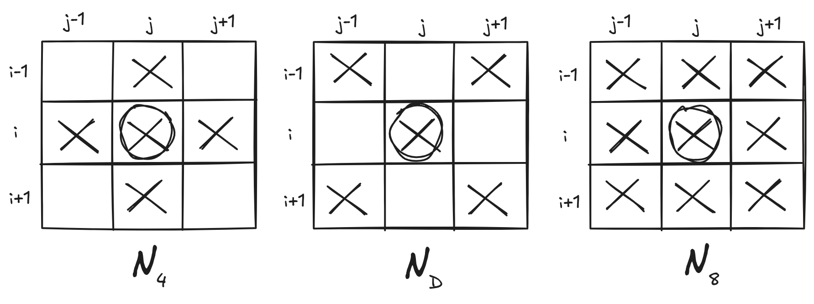
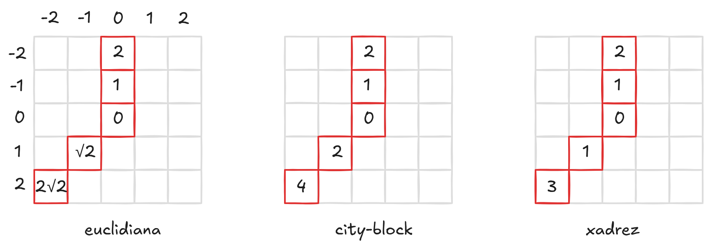
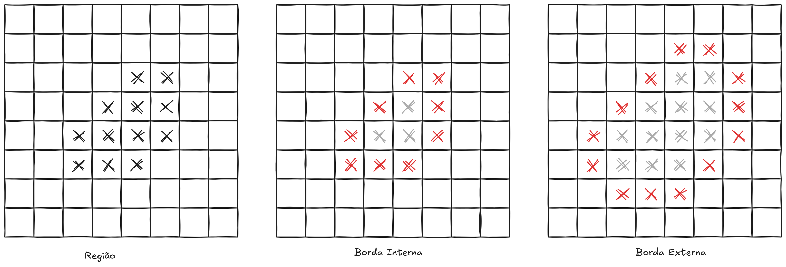
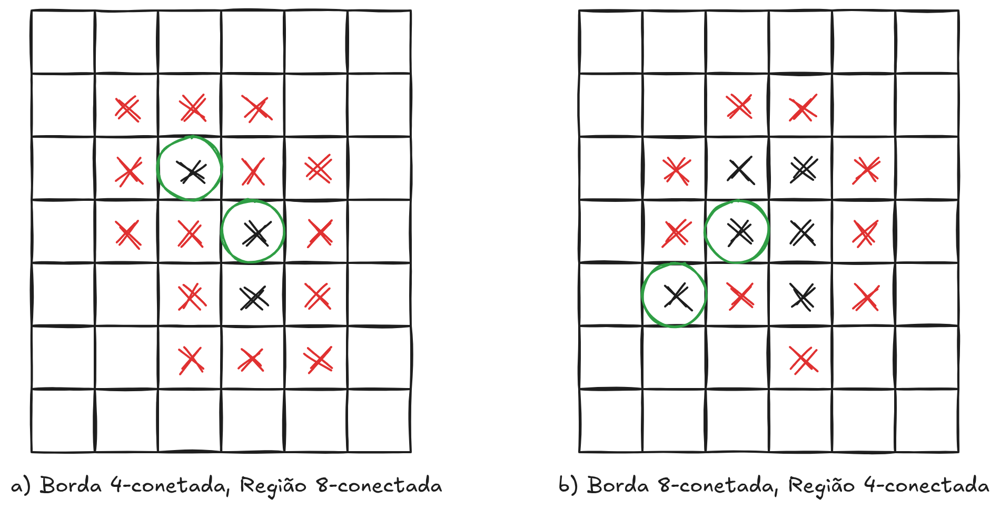
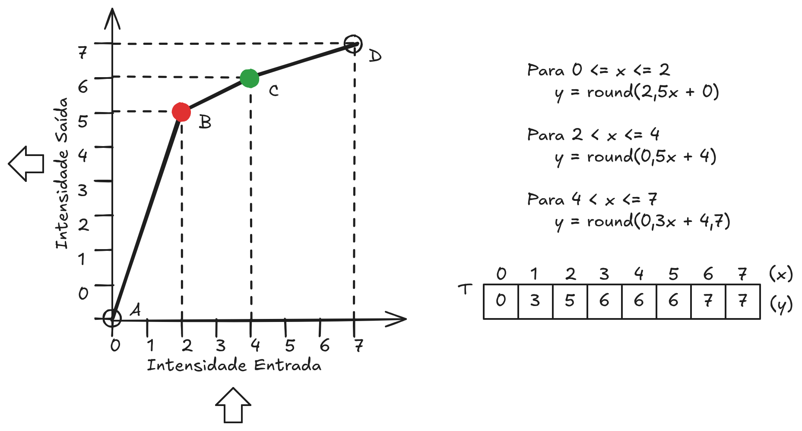
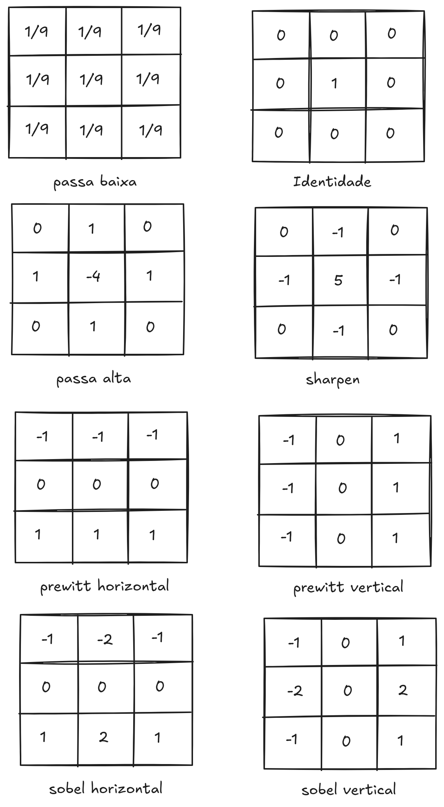
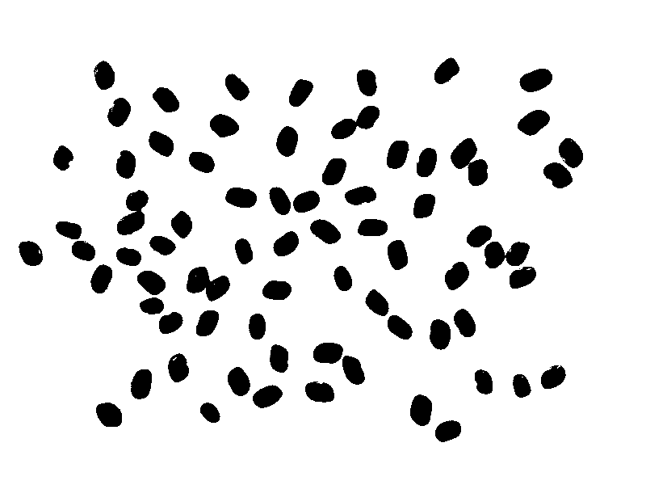

3 Melhoramento de Imagens

O melhoramento de imagens é uma das etapas mais importantes do Processamento Digital de Imagens (PDI). Diferentemente de outras áreas, como segmentação ou reconhecimento de padrões, o objetivo principal do melhoramento não é extrair informações quantitativas da imagem, mas tornar a imagem mais adequada à interpretação humana ou a etapas posteriores de processamento.
As técnicas de melhoramento atuam diretamente sobre os valores de intensidade dos pixels, buscando realçar detalhes, reduzir imperfeições ou evidenciar características de interesse, sem alterar o conteúdo essencial da cena.
3.1 O pixel
Em uma imagem digital, cada pixel pode ser identificado por suas coordenadas no plano da imagem. Seja \(p\) um pixel localizado na posição \((i, j)\). A partir dessa posição, é possível definir diferentes relações de vizinhança entre os pixels, que são amplamente utilizadas em operações de processamento de imagens, como filtragem, segmentação e detecção de bordas.
Vizinhança dos Pixels
A vizinhança de 4 pixels, também chamada de vizinhança ortogonal, considera apenas os pixels que estão imediatamente acima, abaixo, à esquerda e à direita do pixel (p). Esses pixels compartilham um lado com (p). Formalmente, o conjunto desses vizinhos é definido por
\[
N_4(p) = \{(i + 1, j), (i - 1, j), (i, j + 1), (i, j - 1)\}.\
\]
Além desses, também podemos considerar os vizinhos diagonais de (p). Esses pixels estão posicionados nas quatro diagonais ao redor do pixel central, compartilhando apenas um vértice com ele. O conjunto dos vizinhos diagonais é dado por
\[
N_D(p) = \{(i + 1, j + 1), (i - 1, j - 1), (i - 1, j + 1), (i + 1, j - 1)\}.\
\]
Quando consideramos simultaneamente os vizinhos ortogonais e os vizinhos diagonais, obtemos a vizinhança de 8 pixels. Essa vizinhança inclui todos os pixels imediatamente adjacentes ao redor de (p), formando um bloco \(3 \times 3\) com \(p\) no centro. O conjunto de vizinhos é definido pela união das duas vizinhanças anteriores:
\[
N_8(p) = N_4(p) \cup N_D(p).\
\]
Essas diferentes definições de vizinhança são importantes porque determinam como os pixels são considerados conectados em uma imagem. Dependendo da aplicação, pode-se utilizar a vizinhança de 4 ou de 8 pixels para definir conectividade, propagação de regiões ou cálculo de operadores locais.

Medidas de Distância dos pixels
Em uma imagem digital, também é comum definir medidas de distância entre pixels. Essas medidas são importantes em diversas aplicações de processamento de imagens, como segmentação, crescimento de regiões, transformadas de distância e análise de conectividade. Considere dois pixels \(p\) e \(q\), localizados nas coordenadas \(p = (i_1, j_1)\) e \(q = (i_2, j_2)\).
A distância euclidiana corresponde à distância geométrica tradicional entre dois pontos no plano cartesiano. Ela representa o comprimento do segmento de reta que liga os pixels \(p\) e \(q\). Essa medida é definida por
\[ d_e = \sqrt{(i_1 - i_2)^2 + (j_1 - j_2)^2} \]
Essa é a distância mais natural do ponto de vista geométrico, porém pode ser computacionalmente mais custosa, pois envolve o cálculo de raiz quadrada.
Outra medida bastante utilizada em processamento de imagens é a distância city-block (ou distância Manhattan). Nesse caso, a distância é calculada considerando apenas deslocamentos horizontais e verticais, como se o movimento ocorresse em uma grade de ruas ortogonais de uma cidade. A distância é dada por
\[ d_c = |i_1 - i_2| + |j_1 - j_2| \]
Essa medida está diretamente associada à vizinhança de 4 pixels, pois o deslocamento entre os pontos ocorre apenas pelas direções horizontal e vertical.
Uma terceira medida é a distância xadrez (ou distância de Chebyshev). Nessa definição, a distância entre dois pixels corresponde ao maior deslocamento necessário entre as coordenadas horizontal e vertical. Essa medida é definida por
\[ d_x = \max(|i_1 - i_2|, |j_1 - j_2|) \]
O nome distância xadrez vem do fato de que ela corresponde ao número mínimo de movimentos necessários para um rei se deslocar entre duas casas em um tabuleiro de xadrez. Essa métrica está associada à vizinhança de 8 pixels, pois permite movimentos tanto nas direções ortogonais quanto diagonais.
Essas três medidas de distância são amplamente utilizadas em algoritmos de processamento de imagens, e a escolha de qual utilizar depende do tipo de conectividade e da modelagem geométrica desejada para o problema.

Algoritmo: Transformada de Distância em Imagem Binária
Considere uma imagem binária na qual as regiões de pixels com valor 1 representam objetos, e deseja-se calcular a distância de cada pixel do objeto até o fundo (pixels 0).
O algoritmo (Listagem 3.1) possui duas fases e o resultado será uma imagem em tons de cinza, onde o valor de cada pixel indica sua distância ao fundo.
Algoritmo TransformadaDistancia(I, D)
Entrada: imagem binária I[altura][largura]
Saída: imagem de distâncias D[altura][largura]
/* Inicialização */
for (y = 0; y < altura; y++)
for (x = 0; x < largura; x++) {
if (I[y][x] == 0)
D[y][x] = 0;
else
D[y][x] = INF;
}
/* Fase 1 — Varredura direta */
for (y = 0; y < altura; y++)
for (x = 0; x < largura; x++) {
p = D[y][x];
a = D[y-1][x]; // vizinho acima
b = D[y][x-1]; // vizinho à esquerda
if (p != 0)
D[y][x] = min(a + 1, b + 1);
}
/* Fase 2 — Varredura inversa */
maxDist = 0;
for (y = altura-1; y >= 0; y--)
for (x = largura-1; x >= 0; x--) {
p = D[y][x];
a = D[y][x+1]; // vizinho à direita
b = D[y+1][x]; // vizinho abaixo
if (p != 0)
D[y][x] = min(a + 1, b + 1, p);
if (D[y][x] > maxDist)
maxDist = D[y][x];
}
return D;Ao final do processo o maior valor atribuído a \(maxDist\) corresponde ao maior nível de cinza, ou seja, à maior distância ao fundo encontrada na imagem.
Em sequência um simulador desse algoritmo:
Adjacência e Conectividade dos Pixels
Em processamento de imagens, o conceito de adjacência é usado para determinar quando dois pixels podem ser considerados vizinhos pertencentes a uma mesma região. Para isso, define-se inicialmente um conjunto \(V\) de valores de intensidade que serão utilizados para estabelecer essa relação. Esse conjunto depende do tipo de imagem analisada. Por exemplo, em uma imagem binária pode-se considerar \(V = \{1\}\), representando os pixels do objeto. Em imagens em tons de cinza, \(V\) pode ser um subconjunto dos níveis de cinza, e em imagens coloridas pode corresponder a uma determinada cor ou faixa de cores.
Dados dois pixels \(p\) e \(q\), dizemos que eles possuem adjacência-4 ou adjacência-8 quando satisfazem duas condições: ambos possuem valores de intensidade pertencentes ao conjunto \(V\) e, além disso, são vizinhos segundo a definição de vizinhança adotada. No caso da adjacência-4, os pixels devem pertencer à vizinhança \(N_4\). Já na adjacência-8, eles devem pertencer à vizinhança \(N_8\).
A partir do conceito de adjacência, pode-se definir um caminho entre dois pixels. Um caminho de \(p = (i_1, j_1)\) até \(q = (i_n, j_n)\) é uma sequência de pixels distintos
\[ (i_1, j_1), (i_2, j_2), \dots, (i_n, j_n) \]
tal que cada par consecutivo de pixels
\[ (i_x, j_x) \ \text{e} \ (i_{x-1}, j_{x-1}), \quad \text{para} \quad 1 < x \le n \]
é adjacente segundo o critério de vizinhança adotado (adjacência-4 ou adjacência-8).
Considere agora \(S\) como um subconjunto de pixels de uma imagem. Dizemos que dois pixels \(p\) e \(q\) estão conectados em \(S\) se existir um caminho entre eles formado exclusivamente por pixels pertencentes ao conjunto \(S\).
O conjunto de todos os pixels de \(S\) que estão conectados a um determinado pixel \(p\) recebe o nome de componente conexo. Em outras palavras, uma componente conexa é uma região da imagem formada por pixels adjacentes entre si e que satisfazem o critério de pertencimento ao conjunto \(V\).
Região e Borda
O conjunto de pontos conectados em uma imagem forma uma região da imagem. Uma região corresponde, portanto, a um grupo de pixels adjacentes que compartilham determinadas propriedades, como o mesmo valor de intensidade ou pertencimento ao conjunto \(V\). Em muitos contextos de análise de imagens, essa região também pode ser interpretada como uma forma presente na imagem.
Os pixels que não pertencem a nenhuma região de interesse são denominados fundo da imagem. O fundo representa a parte da imagem que não faz parte dos objetos ou estruturas que se deseja analisar.
A fronteira de uma região — também chamada de borda ou contorno — é formada pelos pixels que delimitam a separação entre a região e o fundo. Essa fronteira pode ser definida de duas maneiras. A borda interna é o conjunto de pixels da própria região que possuem pelo menos um vizinho pertencente ao fundo da imagem. Já a borda externa é composta pelos pixels do fundo que possuem pelo menos um vizinho pertencente à região.

Ao definir regiões e fronteiras, é importante evitar o chamado paradoxo da conectividade, que ocorre quando diferentes critérios de vizinhança produzem ambiguidades na definição de conectividade entre pixels. Para evitar esse problema, utiliza-se uma regra complementar: se a vizinhança de 8 pixels (\(N_8\)) for utilizada para definir a borda, então a vizinhança de 4 pixels (\(N_4\)) deve ser utilizada para definir a região. De forma equivalente, se a borda for definida utilizando \(N_4\), a região deve ser definida utilizando \(N_8\).

Na Listagem 3.2 está algoritmo utilizado para atribuir um rótulo diferente para cada uma das regiões gráficas encontradas numa imagem binária (onde a forma é identificada por pixel igual a um). O resultado final é uma imagem em tons de cinza, com o número máximo de tons de cinza igual ao número de regiões encontradas na imagem.
Algoritmo RotulacaoComponentes(I, L)
Entrada: imagem binária I[altura][largura]
Saída: imagem rotulada L[altura][largura]
/* Inicialização */
for (y = 0; y < altura; y++)
for (x = 0; x < largura; x++)
L[y][x] = 0;
proximoRotulo = 1;
/* Primeira varredura */
for (y = 0; y < altura; y++)
for (x = 0; x < largura; x++) {
p = I[y][x];
if (p == 0)
continue;
r = L[y-1][x]; // vizinho acima
t = L[y][x-1]; // vizinho à esquerda
if (r == 0 && t == 0) {
L[y][x] = proximoRotulo;
proximoRotulo++;
}
else if (r != 0 && t == 0)
L[y][x] = r;
else if (r == 0 && t != 0)
L[y][x] = t;
else {
if (r == t)
L[y][x] = r;
else {
L[y][x] = r;
registrarEquivalencia(r, t);
}
}
}
/* Resolução de equivalências */
determinarClassesDeEquivalencia();
/* Segunda varredura */
for (y = 0; y < altura; y++)
for (x = 0; x < largura; x++)
if (L[y][x] != 0)
L[y][x] = representante(L[y][x]);
return L;Em sequência um simulador desse algoritmo:
3.2 Conceito de Melhoramento de Imagens
O melhoramento de imagens pode ser definido como o conjunto de técnicas aplicadas a uma imagem com o objetivo de melhorar sua aparência visual ou facilitar sua análise. O conceito de “melhor” é, em grande parte, subjetivo, pois depende do observador e da aplicação.
Em geral, as técnicas de melhoramento não seguem um critério único de otimização. Ao contrário, são escolhidas com base na experiência, no conhecimento do domínio da aplicação e nas características específicas da imagem a ser processada.
3.3 Domínios de Processamento
As técnicas de melhoramento de imagens podem ser classificadas de acordo com o domínio em que são aplicadas:
- Domínio espacial: as operações são realizadas diretamente sobre os pixels da imagem.
- Domínio da frequência: a imagem é transformada para um domínio alternativo, como o domínio da frequência, onde as operações são aplicadas e, posteriormente, a imagem é reconstruída.
Neste capítulo, o foco principal está nas técnicas de melhoramento no domínio espacial, que são conceitualmente mais simples e amplamente utilizadas. No próximo capítulo será apresentada a transformação para o Domínio da frequência, denominada Transformada de Fourier, que é mais importante e utilizada em Processamento de Imagens e outras aplicações.
3.4 Melhoramento no Domínio Espacial
No domínio espacial, o processamento é descrito por uma função da forma:
\[ g(x,y) = T\left[f(x,y)\right] \]
em que \(f(x,y)\) representa a imagem de entrada, \(g(x,y)\) a imagem resultante e \(T\) um operador definido sobre os valores de intensidade.
Essas operações podem ser aplicadas a um único pixel ou a uma vizinhança de pixels, dependendo da técnica utilizada.
3.5 Transformações de Intensidade
As transformações de intensidade são operações pontuais, nas quais o valor de cada pixel da imagem de saída depende exclusivamente do valor do pixel correspondente na imagem de entrada.
Essas transformações mapeiam um nível de cinza de entrada \(r\) para um nível de saída \(s\), conforme representado no gráfico gerado no exemplo seguinte (onde \(L\) representa a quantidade de níveis de cinza):
Transformação Linear
A transformação linear é uma das formas mais simples de melhoramento e pode ser expressa como:
\[ g(x,y) = a\,f(x,y) + b \]
Os parâmetros \(a\) e \(b\) controlam, respectivamente, o contraste e o brilho da imagem. Valores maiores de \(a\) ampliam o contraste, enquanto o termo \(b\) desloca os níveis de intensidade.
Transformações Logarítmicas
Transformações logarítmicas (da Listagem 3.3) são utilizadas para expandir valores de baixa intensidade e comprimir valores elevados, sendo especialmente úteis em imagens que apresentam grande variação dinâmica.
Uma forma típica é dada por:
\[ g(x,y) = c\,\log\!\left(1 + f(x,y)\right) \]
Essas transformações são comuns em aplicações como imagens médicas e espectrais. A constante \(c\) é definida para ajustar a transformação dentro de intervalo de intensidade. Um valor possível para a constante \(c\) na transformação logarítmica é:
\[ c = \frac{max}{\log(1 + max)} \]
Onde \(max = L-1\) é a máxima intensidade de pixel na imagem, ou seja, o maior valor retornado para a função imagem \(f(x,y)\).
image logarithm (image img)
{
image out = img_clone(img);
int w = img->nc;
int h = img->nr;
int max = img->ml;
int T[max + 1];
for (int i = 0; i < max + 1; i++)
T[i] = log(i + 1) / log(max + 1) * max;
for (int i = 0; i < h * w; i++)
out->px[i] = T[img->px[i]];
return out;
}Transformações de Potência
As transformações de potência (da Listagem 3.4), também conhecidas como correção gama, são definidas por:
\[ g(x,y) = c\,\left[f(x,y)\right]^{\gamma} \]
image power(image img, float gamma)
{
image out = img_clone(img);
int w = img->nc;
int h = img->nr;
int max = img->ml;
int T[max + 1];
for (int i = 0; i < max + 1; i++)
T[i] = pow(i, gamma) / pow(max + 1, gamma) * max;
for (int i = 0; i < h * w; i++)
out->px[i] = T[img->px[i]];
return out;
}O parâmetro (\(\gamma\)) controla a forma da curva de transformação. Valores de (\(\gamma < 1\)) tem o efeito de clarear a imagem, enquanto valores de (\(\gamma > 1\)) escurecem a imagem. O exemplo interativo abaixo ilustra essa transformação:
Transformação Linear por Partes
Uma abordagem bastante flexível para a transformação pontual dos níveis de intensidade de uma imagem é o uso de funções lineares por partes. Nesse tipo de transformação, o mapeamento entre os níveis de cinza de entrada e saída é definido por diferentes segmentos lineares ao longo da faixa dinâmica da imagem. Isso permite ajustar de forma independente diferentes regiões de intensidade, possibilitando, por exemplo, realçar detalhes em áreas escuras ou comprimir variações em regiões muito claras. A principal vantagem dessa técnica é sua flexibilidade, enquanto a principal desvantagem é a necessidade de definir um maior número de parâmetros.
A função de transformação pode ser definida por quatro pontos: \(A = (0,0)\), \(B = (x_1,y_1)\), \(C = (x_2,y_2)\) e \(D = (L−1,L−1)\), onde L representa o número de níveis de cinza. Esses pontos dividem a função em três trechos: \(A–B\), \(B–C\) e \(C–D\). Cada um desses trechos é descrito por uma função linear distinta, permitindo controlar de forma localizada o comportamento da transformação.
De maneira geral, a reta que liga dois pontos \((x_1,y_1)\) e \((x_2,y_2)\) pode ser descrita pela equação \(y = a \times x + b\), em que o coeficiente angular \(a\) é dado por \((y_2 − y_1)/(x_2 − x_1)\), e o termo independente \(b\) é calculado como \(b = y_2 − a·x_2\). Assim, para cada trecho da função (\(A–B\), \(B–C\) e \(C–D\)), é possível determinar uma equação linear específica que define o mapeamento dos níveis de intensidade naquele intervalo.
Como exemplo, considere uma imagem com 8 níveis de cinza, variando de 0 a 7 e que os pontos intermediários são \(B = (2,5)\) e \(C = (4,6)\). A partir desses valores, obtêm-se três segmentos com comportamentos distintos: um crescimento acentuado entre \(A\) e \(B\), que amplia os níveis mais baixos; um crescimento mais suave entre \(B\) e \(C\); e uma região de compressão entre \(C\) e \(D\), que reduz a variação dos níveis mais altos. Calculando as equações correspondentes e arredondando os valores, obtém-se o vetor de transformação \(T = [0, 3, 5, 6, 6, 6, 7, 7]\), conforme ilustrado na Figura 3.1.

Essa transformação evidencia um comportamento importante: há um aumento de contraste nas regiões escuras da imagem, uma transição moderada nos níveis intermediários e uma compressão nas regiões claras. Esse tipo de controle é particularmente útil em aplicações de processamento de imagens, pois permite enfatizar características relevantes em diferentes faixas de intensidade.
Na prática, a implementação dessa transformação é geralmente feita por meio de uma tabela de consulta (Look-Up Table — LUT), na qual cada nível de intensidade de entrada é substituído diretamente pelo valor correspondente de saída. Isso torna o processo eficiente e adequado para aplicações em tempo real.
O exemplo interativo seguinte demonstra a transformação linear por partes. Mova os pontos B (vermelho) e C(verde) para ajustar o contraste da imagem.
3.6 Histograma de Imagens
O histograma de uma imagem descreve a distribuição dos níveis de intensidade dos pixels. Ele fornece uma representação estatística que é amplamente utilizada para análise e melhoramento de imagens.
Imagens com baixo contraste tendem a apresentar histogramas concentrados em uma faixa estreita de valores, enquanto imagens com bom contraste exibem histogramas mais espalhados ao longo da escala de intensidades.
Algoritmo para calcular o histograma de uma imagem está em Listagem 3.5.
3.7 Equalização de Histograma
A equalização de histograma (Pizer et al. (1987), Zuiderveld (1994)) é uma técnica de melhoramento que visa redistribuir os níveis de intensidade de uma imagem de forma aproximadamente uniforme. O objetivo é maximizar o contraste global, especialmente em imagens cujos níveis estão concentrados em uma região específica.
Essa técnica é amplamente utilizada devido à sua simplicidade e eficácia, embora possa produzir resultados indesejados em algumas aplicações, como a amplificação de ruído.
O processo chamado de Mapeamento de Intensidade (Gonzalez e Woods (2010)) é dado por:
\[ s_k = T(r_k) = (L - 1)\sum_{j=0}^{k} p_r(r_j) = \frac{L - 1}{MN}\sum_{j=0}^{k} n_j \]
onde:
- \(L\) é o número de tons de cinza da imagem.
- \(k\) representa um tom de cinza, com
\(k = 0, 1, 2, \ldots, L - 1\). - \(n_k\) é o número de pixels de intensidade \(k\) na imagem (histograma).
- \(p_r(r_k) = \dfrac{n_k}{MN}\) é a probabilidade de ocorrência do nível \(k\).
- \(M\) é o número de linhas da imagem.
- \(N\) é o número de colunas da imagem.
Considere uma imagem digital de dimensão \(64 \times 64\) pixels, totalizando \(MN = 4096\) pixels, codificada com 3 bits por pixel. Nesse caso, o número de níveis de cinza é dado por \(L = 2^3 = 8,\) com níveis de intensidade no intervalo \([0, L-1] = [0,7]\).
A Tabela a seguir apresenta o histograma da imagem, a probabilidade de ocorrência de cada nível de cinza e o mapeamento de intensidade obtido pelo processo de equalização de histograma.
| \(r_k\) | \(n_k\) | \(n_k/MN\) | \(s_k = \dfrac{L-1}{MN}\sum_{j=0}^{k} n_j\) | \(s_k\) (arred.) |
|---|---|---|---|---|
| \(r_0 = 0\) | 790 | 0,19 | 1,33 | 1 |
| \(r_1 = 1\) | 1023 | 0,25 | 3,08 | 3 |
| \(r_2 = 2\) | 850 | 0,21 | 4,55 | 5 |
| \(r_3 = 3\) | 656 | 0,16 | 5,67 | 6 |
| \(r_4 = 4\) | 329 | 0,08 | 6,23 | 6 |
| \(r_5 = 5\) | 245 | 0,06 | 6,65 | 7 |
| \(r_6 = 6\) | 122 | 0,03 | 6,86 | 7 |
| \(r_7 = 7\) | 81 | 0,02 | 7,00 | 7 |
Observa-se que o valor \(n_k\) corresponde ao número de pixels com intensidade \(r_k\), enquanto \(n_k/MN\) representa a probabilidade de ocorrência desse nível de cinza na imagem.
Esse procedimento (da Listagem 3.5) define uma tabela de consulta (LUT) que mapeia cada nível de entrada \(r_k\) para um novo nível \(s_k\), redistribuindo os níveis de cinza de forma mais uniforme e aumentando o contraste global da imagem.
image equalization(image in)
{
image out = img_clone(in);
int M = in->nc; // nro de colunas da imagem
int N = in->nr; // nro de linhas da imagem
int L = in->ml + 1; // nro de tons de cinza na imagem
int n[L]; // n[k] = nro de pixels de intensidade k
int T[L]; // funcao de transformacao
int sum; // soma de frequencias
// calculo do histograma
for (int i = 0; i < L; i++)
n[i] = 0;
for (int i = 0; i < M * N; i++)
n[in->px[i]]++;
// funcao de transformacao T (LUT)
sum = n[0];
T[0] = 1.0 * (L - 1) / (M * N) * sum;
for (int i = 1; i < L; i++)
{
sum = sum + n[i];
T[i] = 1.0 * (L - 1) / (M * N) * sum;
}
// Equalizacao do histograma
for (int i = 0; i < M * N; i++)
out->px[i] = T[in->px[i]];
return out;
}O exemplo interativo a seguir apresenta a implementação do algoritmo de equalização de histograma. No exemplo, pode-se carregar qualquer imagem, mas somente as intensidades (tons de cinza), são utilizadas. Para imagem carregada será apresentada a imagem original, o seu histograma correspondente, a imagem equalizada e o histograma equalizado.
3.8 Filtragem
A filtragem no Processamento Digital de Imagens é o conjunto de técnicas utilizadas para modificar ou extrair informações de uma imagem por meio da aplicação de operadores matemáticos que atuam sobre a vizinhança de cada pixel. Esses operadores analisam a relação entre um pixel e seus vizinhos, permitindo realçar características relevantes, como bordas e detalhes, ou atenuar informações indesejadas, como ruídos e variações abruptas de intensidade. A filtragem pode ser realizada no domínio espacial ou no domínio da frequência e envolve tanto filtros lineares, baseados em operações de convolução, quanto filtros não lineares, que não obedecem às propriedades de linearidade. Dessa forma, a filtragem é uma etapa fundamental no pré-processamento e na análise de imagens, sendo amplamente utilizada em aplicações de visão computacional, reconhecimento de padrões e análise visual automatizada.
Convolução
A convolução é o processo de calcular a intensidade de um determinado pixel em função da intensidade de seus vizinhos. O cálculo é baseado em ponderação, isto é, utilizam-se pesos diferentes para pixels vizinhos diferentes.
A convolução pode ser interpretada como o deslizamento de uma máscara (ou kernel) sobre a imagem, onde, a cada posição, é calculada uma soma ponderada entre os valores dos pixels da vizinhança e os coeficientes do kernel.
O exemplo interativo seguinte ilustra o processo de convolução para uma imagem 16x16 em tons de cinza. No exemplo é possível iniciar a simulação (clicando no botão “continuar”), pausar o processo (clicando no botão “pausar”), ou acelerar/desacelerar a simulação, clicando com o mouse sobre a imagem.
Equação da Convolução
Matematicamente, a convolução bidimensional é expressa por:
\[ g(i,j) = \sum_{y=-a}^{a} \sum_{x=-b}^{b} w(y,x)\, f(i+y, j+x) \]
onde:
- \(f(i,j)\) é a imagem de entrada;
- \(g(i,j)\) é a imagem resultante;
- \(w(y,x)\) é a máscara de convolução;
- \(a\) e \(b\) definem o tamanho do kernel.
O pseudocódigo da convolução está na Listagem 3.6.
for (i = a; i < nl - a; i++)
for (j = b; j < nc - b; j++) {
int sum = 0;
for (y = -a; y <= a; y++)
for (x = -b; x <= b; x++)
sum += W[y][x] * F[i+y][j+x];
G[i][j] = sum;
}Operações lineares e não lineares
Operadores lineares e não lineares constituem classificações importantes no Processamento Digital de Imagens, sendo amplamente utilizadas, por exemplo, na classificação de filtros.
Seja um operador \(H\) que produz a imagem de saída \(g(x,y)\) a partir da imagem de entrada \(f(x,y)\), de acordo com a relação
\[ H[f(x,y)] = g(x,y). \]
Diz-se que o operador \(H\) é linear se satisfaz a seguinte condição:
\[ H[a_i f_i(x,y) + a_j f_j(x,y)] = a_i H[f_i(x,y)] + a_j H[f_j(x,y)] \]
ou, de forma equivalente,
\[ = a_i g_i(x,y) + a_j g_j(x,y). \]
Essas relações expressam as propriedades de aditividade e homogeneidade, que caracterizam os operadores lineares.
Exemplos de Filtros
Os filtros passa-baixa, cuja a soma dos coeficientes do kernel é um (ou próxima de um) tem o efeito de atenuar as altas frequências e preservar as baixas frequências. Na prática significa suavização da imagem.

Um filtro passa-alta realça bordas e detalhes, atenuando as baixas frequências (regiões suaves). Em PDI, isso é feito com kernels cuja soma dos coeficientes é zero (ou próxima de zero).
Regra Prática:
- Passa-baixa = a soma dos coeficientes no kernel é 1 (um);
- Passa-alta = a soma dos coeficientes no kernel é 0 (zero);
- High-boost (realce) = preserva a imagem, a soma dos coeficientes no kernel é maior que 1 (um).
No exemplo interativo em sequência, esses diversos filtros podem ser testados:
3.9 Considerações sobre Ruído
O ruído é uma variação indesejada nos valores de intensidade da imagem, geralmente introduzida durante a aquisição ou transmissão. Técnicas de melhoramento devem considerar a presença de ruído, pois operações de realce podem amplificá-lo.
Assim, o melhoramento de imagens frequentemente envolve um compromisso entre realce de detalhes e supressão de ruído.
Ruído Sal e Pimenta
O ruído sal e pimenta é um tipo de ruído impulsivo muito comum em processamento digital de imagens. Ele se manifesta como pixels isolados com valores extremos, geralmente preto (0) e branco (255) em imagens em tons de cinza, lembrando grãos de sal e pimenta espalhados sobre a imagem.
Esse ruído costuma surgir devido a:
- falhas em sensores de aquisição;
- erros de transmissão de dados;
- conversões analógico-digitais defeituosas;
- pixels mortos ou saturados.
Diferentemente de ruídos aditivos, o ruído sal e pimenta não afeta todos os pixels, mas apenas uma fração deles, substituindo seus valores originais por valores extremos.
Modelo matemático
O modelo clássico do ruído sal e pimenta pode ser descrito por:
\[ g(x,y) = \begin{cases} 0, & \text{com probabilidade } p_p \\ 255, & \text{com probabilidade } p_s \\ f(x,y), & \text{com probabilidade } 1 - (p_p + p_s) \end{cases} \]
onde:
- \(f(x,y)\) é a imagem original;
- \(g(x,y)\) é a imagem corrompida;
- \(p_p\) é a probabilidade de ocorrência da pimenta (pixel preto);
- \(p_s\) é a probabilidade de ocorrência do sal (pixel branco).
Características principais
- Ruído não gaussiano;
- Afeta pixels de forma esparsa e abrupta;
- Facilmente perceptível visualmente;
- Pode degradar significativamente bordas e detalhes finos.
Técnicas de remoção
Filtros lineares, como o filtro da média, não são adequados para esse tipo de ruído, pois tendem a borrar a imagem. A abordagem mais eficaz é o uso de filtros não lineares, em especial:
- Filtro da mediana: remove impulsos preservando bordas;
- Filtro da mediana adaptativo: ajusta o tamanho da janela conforme a densidade do ruído.
O filtro da mediana substitui o valor do pixel pelo valor mediano de sua vizinhança, sendo especialmente eficiente para eliminar pixels extremos isolados.
No exemplo interativo seguinte está um programa que permite carregar uma imagem (que é convertida em tons de cinza), gerar ruído sal e pimenta de acordo com probabilidades definidas e em seguida aplicar o filtro da mediana para remoção do ruído, para demonstração destes conceitos.
3.10 Considerações Finais
O melhoramento de imagens desempenha um papel fundamental no processamento digital, servindo tanto para aprimorar a visualização quanto para preparar imagens para etapas posteriores, como segmentação e reconhecimento.
As técnicas apresentadas neste capítulo fornecem uma base conceitual para o entendimento do melhoramento no domínio espacial, sendo essenciais para o estudo de métodos mais avançados de processamento e análise de imagens.
Exercício 1 — Conceitual
Explique com suas palavras:
- O que é melhoramento de imagens
- Qual a diferença entre melhoramento e restauração de imagens
- Por que o melhoramento depende da percepção humana
Exercício 2 — Contraste
Considere uma imagem com baixo contraste:
- O que caracteriza uma imagem de baixo contraste?
- Como o histograma dessa imagem se apresenta?
- Qual transformação pode ser aplicada para melhorar sua visualização?
Exercício 3 — Transformações de intensidade
Dadas as transformações abaixo:
- Negativo da imagem
- Transformação logarítmica
- Transformação potência (gamma)
Explique:
- O efeito de cada uma sobre a imagem
- Em quais situações cada transformação é mais indicada
Exercício 4 — Cálculo de negativo
Considere uma imagem de 8 bits (níveis de 0 a 255).
- Qual é a fórmula do negativo de uma imagem?
- Calcule o valor do pixel resultante para os níveis:
- 0
- 50
- 120
- 200
- 255
Exercício 5 — Equalização de histograma
Explique:
- O que é o histograma de uma imagem
- O objetivo da equalização de histograma
- Como essa técnica melhora o contraste
Exercício 6 — Análise de histograma
Considere os seguintes cenários:
- Histograma concentrado à esquerda
- Histograma concentrado à direita
- Histograma concentrado no centro
Para cada caso, descreva:
- Como a imagem aparenta visualmente
- Que tipo de transformação pode ser aplicada
Exercício 7 — Filtros espaciais
Explique a diferença entre:
- Filtros lineares e não lineares
- Filtro de média e filtro de mediana
Indique em quais situações cada um é mais adequado.
Exercício 8 — Suavização
Explique:
- O objetivo da suavização de imagens
- Como o filtro de média atua
- Qual o efeito colateral comum desse tipo de filtro
Exercício 9 — Realce de bordas
Explique:
- O que são bordas em uma imagem
- Como operadores como Sobel ou Laplaciano ajudam a detectá-las
- Em quais aplicações esse tipo de técnica é útil
Exercício 10 — Implementação prática (contraste)
Implemente um programa que:
- Leia uma imagem em tons de cinza
- Aplique:
- negativo
- transformação logarítmica
- correção gamma (γ = 0.5 e γ = 2.0)
- Salve as imagens resultantes
- Compare visualmente os resultados
Exercício 11 — Implementação prática (filtros)
Implemente um programa que aplique:
- Filtro de média 3×3
- Filtro de mediana 3×3
Compare os resultados em imagens com ruído.
Exercício 12 — Comparação de técnicas
Compare os efeitos de:
- Suavização
- Realce de contraste
- Detecção de bordas
Explique como cada técnica altera a informação da imagem.
Questão reflexiva
Explique como técnicas de melhoramento de imagens são utilizadas em:
- Diagnóstico médico
- Sistemas de vigilância
- Sensoriamento remoto
- Fotografia digital
Discuta a importância de escolher corretamente a técnica para cada aplicação.
Objetivo
O objetivo desta atividade é explorar os conceitos iniciais da disciplina de processamento de imagens, tais como: varredura da imagem, componentes conexos e conectividade 4 e 8.
Problema
Considere a imagem abaixo de uma bandeja de feijões:

Para qualquer imagem de entrada com características semelhantes (fundo branco com diversas formas pretas de diferentes tamanhos), desenvolva um programa para contar o número de componentes conexos. Para isso, considere o algoritmo de rotulação de componentes conexos conforme descrito neste capítulo.
Descrição
- Desenvolva um programa, baseado no código fornecido para cálculo do negativo de uma imagem, que:
- carregue uma imagem no formato PGM;
- identifique e conte os componentes conexos;
- apresente o resultado.
- O programa deve receber o nome do arquivo pela linha de comando e produzir a seguinte saída:
#componentes= XXOnde XX é o número de componentes conexos encontrados.
Opcionalmente, pode ser gerada uma imagem PGM contendo a rotulação dos componentes.
Teste o programa com diferentes imagens.
Objetivo
O objetivo desta atividade é explorar conceitos de codificação de imagens, especialmente técnicas relacionadas à inserção e extração de marca d’água invisível, utilizadas em algoritmos de compactação e proteção de dados.
Problema
Marcas d’água são utilizadas para: - identificação de direitos autorais; - identificação de usuários; - verificação de autenticidade; - proteção contra cópias.
Diferente da marca d’água visível, a marca d’água invisível não pode ser percebida a olho nu, mas pode ser recuperada por meio de processamento da imagem.
Nesta atividade, você deverá desenvolver um programa capaz de extrair uma marca d’água invisível de uma imagem em formato PGM.
Descrição
Desenvolva um programa que:
Leia uma imagem em formato
.pgmcontendo marca d’água invisívelUtilize como base o código de exemplo fornecido (negativo de imagem)
O programa deverá:
Aplicar o processo de decodificação da marca d’água
Recuperar os bits menos significativos da imagem
Reconstruir a imagem da marca d’água
A técnica utilizada considera:
Inserção da marca d’água nos bits menos significativos (LSB)
Manipulação de níveis de intensidade em imagens de 8 bits
Modelo matemático
A inserção da marca d’água visível pode ser representada por:
\[ f_w = (1 - \alpha)f + \alpha w \]
onde:
- \(f\): imagem original
- \(w\): marca d’água
- \(\alpha\): fator de visibilidade
Para marca d’água invisível, utiliza-se manipulação de bits, deslocando informações da marca para os bits menos significativos da imagem. Pode-se usar, por exemplo a seguinte expressão para sobrepor uma marca d’água invisível \(w\) sobre a imagem \(f\):
\[ f_w = 4(\frac{f}{4}) + \frac{w}{64} \]
Dividir e multiplicar por 4 tem o efeito de zerar os dois bits menos significativos dos pixels da imagem \(f\). Dividir \(w\) por 64 tem o efeito de deslocar os dois bits mais significativos dos pixels da imagem de marca d’água \(w\) para as duas posições menos significativas (considerando que a imagem tem intensidade quantizada em 8 bits). A soma desses dois valores gera imagem com a marca d’água invisı́vel. Essa marca pode ser extraı́da usando a operação inversa, ou seja, zerando os 6 bits mais significativos da imagem e ajustando os valores restantes ao intervalo completo de intensidade.
Formato da execução
O programa deve ser executado via linha de comando:
./marca <original.pgm> <marcada.pgm>